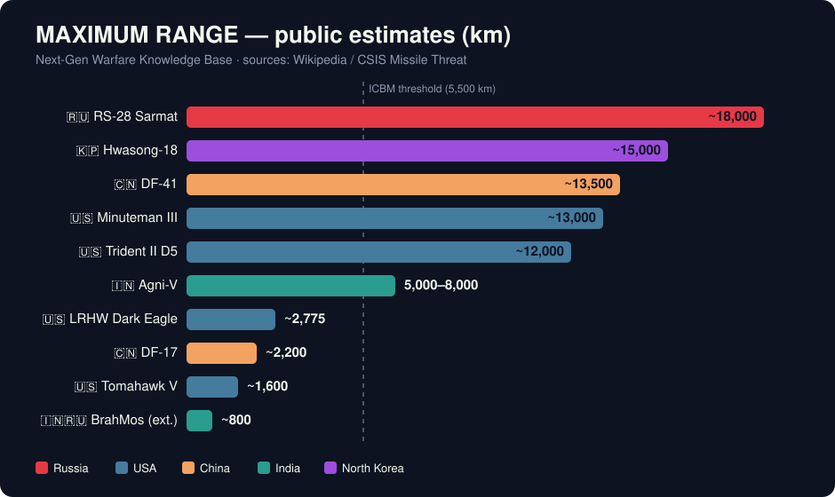
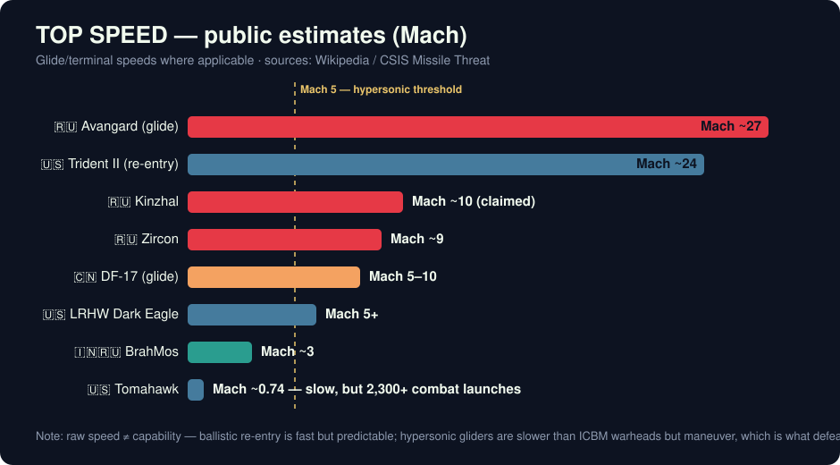

An open-source missile knowledge base — researched, structured, illustrated, and documented by instructing an AI in plain language instead of building it by hand.
Non-sensitive, public data only · Sources: Wikipedia / CSIS Missile Threat
That was the entire specification. No scripts, no templates, no copy-pasting from websites.
Plus 5 weapon-class explainers, YAML frontmatter on every page, templates, an AI skill, a cross-linked index with cited sources — all versioned in git and governed by one rule file.
Next-gen-warfare/ ├── CLAUDE.md ← rules the AI must follow ├── README.md ← entry point & navigation ├── inventory/ ← 11 missile profiles + index │ rs-28-sarmat.md · df-41.md · trident-ii-d5.md · zircon.md … ├── classes/ ← 5 category deep-dives │ ballistic · hypersonic · cruise · anti-ship · air-defense ├── armory/ ← 6 country overviews │ russia · usa · china · india · north-korea · europe ├── templates/ ← skeletons for new entries ├── assets/ │ images/ (9 photos) · infographics/ (2 SVG charts) ├── .claude/skills/ ← add-missile-entry, a pipeline the AI runs └── presentation/ ← you are here · all under git
A single markdown file acts as a standing instruction set for any AI that works in this folder:
The knowledge base carries its own safety policy and style guide — enforcement travels with the folder.


› make a folder "Next-gen-warfare", knowledge base of the toughest missiles worldwide, with sub-categories, pics and infographics. CLAUDE.md rule: non-sensitive data only.
1. designed the folder architecture 2. wrote 24 cross-linked files 3. pulled 9 free-license photos from Wikimedia via API 4. drew 2 SVG charts from the data 5. built this very presentation
One conversational instruction → a planned, executed, self-documented project.
| Task | Manual (terminal + browser) | With AI |
|---|---|---|
| Create structure | mkdir × 7, touch × 24, by hand | described in one sentence |
| Research 11 missiles | hours of reading & note-taking | drafted with sources cited |
| Find licensed images | search, check licenses, download each | fetched via Wikimedia API |
| Make infographics | learn a design tool | generated as SVG code |
| Keep it consistent | discipline & memory | CLAUDE.md enforces the rules |
| Build presentation | another tool, another evening | same conversation |
Estimated hands-on time for a project of this scope. The human's job shifts from typing every command to describing intent and reviewing results.
Next step: push this knowledge base to GitHub so it lives alongside the code that explains it.
Navigate: ← → keys, click, or the buttons below · Built 2026-07-02